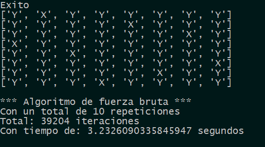

En el artículo anterior analizamos una alternativa de fuerza bruta para dar solución al problema de las ocho damas, y dijimos que reimplementarlo haciendo uso de una estrategia algo más efectiva, en este caso usando una cola de prioridad.
Recordemos que las colas son estructuras de datos FIFO (Primero en Entrar, Primero en Salir), es decir los "clientes" se atienden en el orden en que llegan; existen tambien colas de prioridad (Priority Queue) que son más parecidas a las cola en nuestro país, si usted conoce al que atiende o a alguien que está más adelante en la cola usted podrá saltarse unos cuantos puestos de acuerdo a su nivel de confianza con dicha persona (la prioridad) que tenga. La diferencia entre las dos colas se muestra en la siguiente imagen.
Vamos a aprovechar esta característica de las colas de prioridad para crear una cola con las casillas que aún están libres dentro del tablero, asignando como prioridad el número de casillas ocupadas que quedarían en el tablero una vez una dama fuera jugada en esa casilla, y haremos que el algoritmo de backtracking pruebe primero con las casillas más prometedoras, aquellas que dejarían mayor cantidad de celdas libres en el tablero.
De paso realizamos refactorización del código siguiendo el principio de una sola responsabilidad que dice que cad función o método debe hacer una sola tarea, termminando en que nuestra función damas ha delegado gran parte de las responsabilidades que tenía en funciones auxiliares.
def damas(numero, tablero, actual):
global cont
cont = cont + 1
nuevoTablero = determinarNuevoTablero(tablero, actual)
if (numero == 8):
print ("Exito")
for fila in nuevoTablero:
print (fila)
return True
else:
colaP = crearColaCeldasLibres(nuevoTablero)
while (not colaP.empty()):
(n, (i, j)) = colaP.get()
if (damas (numero + 1, nuevoTablero, (i, j))):
return True
return FalseEn el fragmento de código anterior vemos que se han delegado las siguientes responsabilidades:
- Calcular el nuevo estado del tablero: función determinarNuevoTablero.
- Identificar las celdas libres (y de paso crear una cola con ellas): función crearColaCeldasLibres
Una vez se tiene la cola con las celdas libres ordenadas se recorre dicha cola y se prueba con cada una de las celdas, hasta encontrar una que permita hayar la solución del problema.
Veamos entonces cada una de las funciones auxiliares:
def determinarNuevoTablero (tablero, actual):
x,y = actual
nuevoTablero = deepcopy(tablero)
nuevoTablero[x][y] = "X"
sumIndices = x + y
difIndices = x - y
for i in range (8):
if (nuevoTablero[i][y] == "_"):
nuevoTablero[i][y] = "Y"
if (nuevoTablero[x][i] == "_"):
nuevoTablero[x][i] = "Y"
j = sumIndices - i
if (j >=0 and j <= 7 and nuevoTablero[i][j] == "_"):
nuevoTablero[i][j] = "Y"
j = i - difIndices
if (j >=0 and j <= 7 and nuevoTablero[i][j] == "_"):
nuevoTablero[i][j] = "Y"
return nuevoTablerodef crearColaCeldasLibres (tablero):
colaP = PriorityQueue()
for i in range(8):
for j in range(8):
if (tablero[i][j] == "_"):
tableroSiColocaIJ = determinarNuevoTablero (tablero, (i,j))
celdasOcupadasIJ = determinarCeldasOcupadas (tableroSiColocaIJ)
colaP.put ((celdasOcupadasIJ, (i,j)))
return colaP
def determinarCeldasOcupadas (tablero):
contOcupadas = 0
for i in range(8):
for j in range(8):
if (tablero[i][j] != "_"):
contOcupadas = contOcupadas + 1
return contOcupadasFinalmente inicializamos el tablero, y el contador de iteraciones, asegurándonos que la posición inicial en cada repetición sea aleatoria con el fin de dar comienzo a las pruebas de rendimiento que realizaremos, número de iteraciones representado en llamados recursivos a la función damas y tiempo de ejecución del código.
tablero = [ ["_" for x in range (8)] for y in range(8)]
cont = 0
seed()
numRepeticiones = 10
tiempoInicial = time()
for i in range (numRepeticiones):
damas(1, tablero , (randint(0,7), randint(0,7)))
tiempoTranscurrido = time() - tiempoInicial
print ()
print ("*** Algoritmo con cola de prioridad ***")
print ("Con un total de " + str(numRepeticiones) + " repeticiomes")
print ("Total: " + str(cont) + " iteraciones")
print ("Con tiempo de: " +str(tiempoTranscurrido) + " segundos")Lo mismo haremos con el algoritmo de fuerza bruta con el fin de poder realizar la comparación entre los dos.
| Cola de Prioridad | Fuerza Bruta |
|  | |
 |
|
A pesar de que existen variaciones se puede observar que el algoritmo que hace uso de una cola de prioridad es más rápido que el algoritmo de fuerza bruta requiriendo en promedio 5 veces menos llamados recursivos y usando la mitad del tiempo; aunque es necesario notar que esta mejora en número de llamados recursivos y tiempo de ejecución viene con el costo de que la solución con cola de prioridad usa más memoria que la solución de fuerza bruta, ya que cada llamada a cada una de las funciones auxiliares hace uso de la pila asignada por el sistema operativo a nuestro programa, además de hacer uso de una estructura de datos adicional como lo es la cola.
Es importante que tengamos en cuenta que nuestras funciones y aplicaciones pueden y ser perfiladas para analizar el consumo de memoria y el tiempo de ejecución de las mismas, sin caer en el error de pensar en optimizar antes de tener una solución completa, porque como reza la sabiduría popular "optimizar antes de tiempo es la madre de todos los problemas".
Terminamos por ahora este artículo y quedamos pendientes de muchos más temas que vamos a explorar: recursividad, programación funcional, patrones de diseño, programación reactiva, lenguajes pasados, presentes y otros con gran futuro.